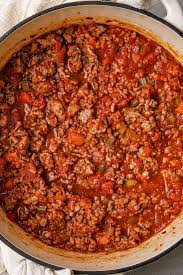
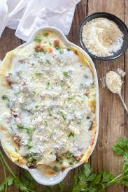
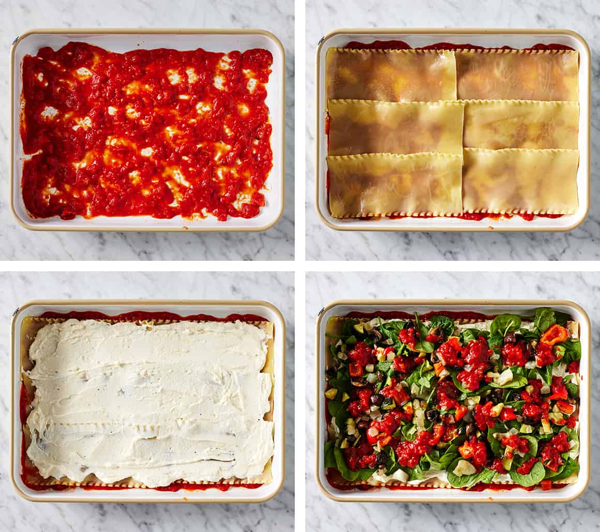
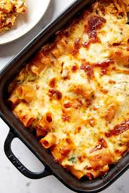

The History of Lasagna: From Ancient Greece to Italy
While lasagna is widely considered the ultimate Italian comfort food,
its roots actualy trace back to Ancient Greece
-
Origin of the Name:
The word "Lasagna" is believed to derive from
the Greek word lasanon which means a pot or
trivet. The Romans later adopted this into the
Latin lasanum, referring to a cooking vessel. -
Evolution of the Dish:
Over time, the food cooked inside the vessel
took on the name of the pot itself. In ancient
Roman times, a dish called losana or lagana
existed, consisting of flat sheets of wheat
dough boiled and layered with spices and meat. -
The Modern Version in Emilia-Romagna
The modern lasagna we know today—featuring
layers of meat sauce (ragù), white sauce (béchamel),
and Parmigiano-Reggiano cheese—was perfected
in the Emilia-Romagna region of Italy. This
traditional recipe is known worldwide as Lasagne
alla Bolognese.
Classic Homemade Baked Lasagna Recipe
Making lasagna requires a bit of patience because you need to prepare
multiple components, but the final result is absolutely worth it. Here is
a creamy, savory, and comforting homemade recipe.
Ingredients
-
Main Components:
- 12 Lasagna pasta sheets (you can use oven-ready sheets that don't require pre-boiling)
- 250 grams Mozzarella cheese (shredded, for topping)
- 50 grams Parmesan cheese (grated)
-
Meat Sauce(Ragù):
- 500 grams ground beef
- 1 medium onion (finely chopped)
- 3 cloves garlic (finely chopped)
- 1 can (400 grams) tomato puree/crushed tomatoes
- 4 tablespoons tomato paste
- 1 teaspoon dried oregano
- 1 teaspoon dried basil
- salt, black pepper, and sugar to paste
- 2 tablespoons olive oil or butter for sautéing
-
White Sauce (Béchamel)
- 3 tablespoons butter
- 3 tablespoons al-purpose flour
- 500 ml full cream milk
- 1/2 teaspoon ground nutmeg
- 50 grams cheddar cheese (grated)
- Salt and white pepper to taste
Step-by-Step Instructions
The assembly order is crucial to ensure the pasta cooks evenly and the layers hold their shape.
-
Make the Meat Sauce
15-20 mins
Heat the olive oil or butter in a pan.
Sauté the chopped onion and garlic until
fragrant and translucent. Add the ground
beef and cook until browned. Stir in the
tomato puree, tomato paste, oregano, basil,
salt, pepper, and a pinch of sugar. Add a
splash of water if it's too thick. Simmer
on low heat until the sauce thickens and
flavors combine. Set aside.
Meat Sauce -
Make the White Sauce (Béchamel)
10 mins
Melt the butter in a saucepan over low heat.
Add the flour and whisk constantly for about
1 minute to cook out the raw flour taste
without letting it brown. Gradually pour
in the milk a little at a time, whisking
vigorously to prevent lumps. Add the ground
nutmeg, cheddar cheese, salt, and pepper.
Cook until the sauce thickens and becomes
smooth. Set aside.
White Sauce -
Assemble the Layers
5-10 mins
Preheat your oven to 180°C. Grease a baking
dish (around 20x20 cm) with a bit of butter.
Assemble the layers in this specific order:-
Spread a thin layer of meat sauce
at the bottom of the dish. -
Place a layer of lasagna sheets
on top. -
Spread a layer of béchamel sauce
over the pasta. -
Spoon a generous layer of meat
sauce over the béchamel, then
sprinkle with a little
mozzarella and parmesan.
Repeat this sequence
(pasta - béchamel - meat sauce - cheese) until
all ingredients are used (usually 3-4 layers).
For the final top layer, cover completely with
a generous amount of mozzarella and parmesan.
Lasagna Layers -
Spread a thin layer of meat sauce
-
Bake the Lasagna
30-40
Cover the baking dish tightly with aluminum foil
(this traps moisture to cook the pasta and
prevents the cheese from burning early). Bake
at 180°C for 20 minutes. Remove the foil and bake
for another 10-15 minutes until the cheese is
melted, golden brown, and bubbling around the edges.
Lasagna serve
Pro Tip: Once out of the oven, do not cut the lasagna immediately. Let it rest at
room temperature for 15-20 minutes. This allows the sauces and pasta to set and
firm up, ensuring clean, beautiful layers that don't collapse when sliced.
Click the button below to the History of Lasagna
Click the button below if you wan to see the Ingredients
for making Lasagna
Click the button below if you wan to see the Steps for
making Lasagna.
Home button